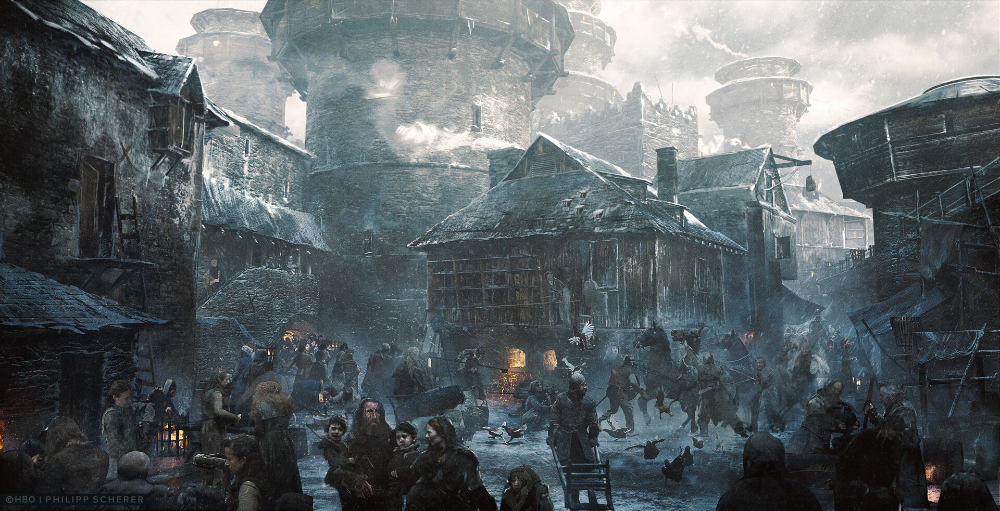

Винтерфелл
Родовой замок Старков, древняя столица Севера. По преданиям, построен Брандоном Строителем тысячи лет назад. Винтерфелл стоит в самом сердце северных земель — на восточной окраине Волчьего леса, к западу от Белого Ножа и юго-западу от Длинного озера. Королевский тракт проходит мимо стен Винтерфелла. Зимний городок у стен замка служит приютом для подданных Старков в долгие зимы. В полудне пути от Винтерфелла расположен Сервин, родовой замок одноимённого дома.
